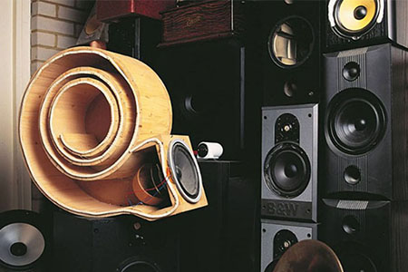
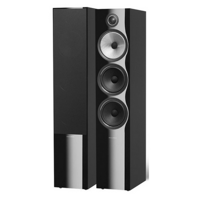
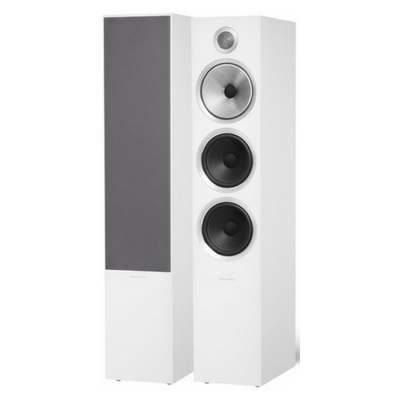
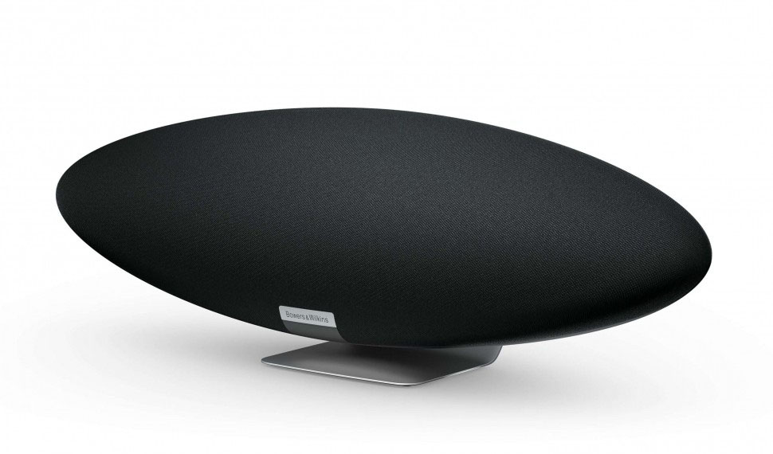

depo-500
Адвокатское онлайн бюро
Юридическая поддержка в банкротствах и возвратах недвижимости
Владимир
Олег
001
Эталонное качество
Превосходные, бескомпромиссные и бесподобные. Самые известные студии звукозаписи в мире выбирают акустические системы Bowers & Wilkins Серии 800 Diamond только по той причине, что они представляют собой вершину звукового превосходства.
002
Наследие и инновации
Превосходные, бескомпромиссные и бесподобные. Самые известные студии звукозаписи в мире выбирают акустические системы Bowers & Wilkins Серии 800 Diamond только по той причине, что они представляют собой вершину звукового превосходства.
003
Наше мастерство
Превосходные, бескомпромиссные и бесподобные. Самые известные студии звукозаписи в мире выбирают акустические системы Bowers & Wilkins Серии 800 Diamond только по той причине, что они представляют собой вершину звукового превосходства.
004
Идеальная точность
Превосходные, бескомпромиссные и бесподобные. Самые известные студии звукозаписи в мире выбирают акустические системы Bowers & Wilkins Серии 800 Diamond только по той причине, что они представляют собой вершину звукового превосходства.
005
Идеальная точность
Превосходные, бескомпромиссные и бесподобные. Самые известные студии звукозаписи в мире выбирают акустические системы Bowers & Wilkins Серии 800 Diamond только по той причине, что они представляют собой вершину звукового превосходства.
О нас
about us
История Bowers & Wilkins началась с одного
человека — Джона Бауэрса. Его целеустремлённость
и страсть к звуку стали основой компании,
которую он создал более полувека назад
История Bowers & Wilkins началась с одного
человека — Джона Бауэрса. Его целеустремлённость
и страсть к звуку стали основой компании,
которую он создал более полувека назад

Каталог Bowers & Wilkins
Bowers & Wilkins Catalog



Bowers&Wilkins 604 S2
Серия 600 Anniversary Edition - незаменимые колонки для любителей музыки. Сегодня 600-й серии исполняется 25 лет - и мы решили отметить это событие. Представляем юбилейное издание серии 600 - Anniversary Edition. Идеально подходит для больших комнат, а также для домашнего кинотеатра. Выпускается в двух новых эффектных отделках шпоном натурального дерева, а также в черном и белом исполнении. Серия 600 Anniversary Edition c любовью к музыке.
Aртикул: 991852
Тип акустической системы:
Напольная
Количество полос:
3-полосная с фазоинвертором
Диапазон воспроизводимых частот:
35 — 24000 Гц
Сопротивление:
8 Ом
Чувствительность:
90Дб
Габариты:
1087 × 366 × 414 мм
Выбор расцветки
Стоимость: 705 000 р
Банкротство
Юридическое резюме: Процедура банкротства (несостоятельности) 1. Понятие и признаки банкротства Банкротство — это признанная арбитражным судом неспособность должника в полном объеме удовлетворить требования кредиторов по денежным обязательствам и (или) исполнить обязанность по уплате обязательных платежей. Признаки для инициирования дела (ст. 3, 6, 213.3 Закона № 127-ФЗ): Субъект Сумма долга (от) Просрочка (от) Юридическое лицо 300 000 руб. 3 месяцев Физическое лицо 500 000 руб. (по общему правилу) 3 месяцев Физическое лицо (спецнорма) от 25 000 руб. (при реструктуризации) — Гражданин также вправе подать на банкротство при предвидении банкротства, даже если формально признаки не наступили. 2. Участники (субъекты) процесса Должник (кто не может платить). Кредиторы (те, кому должны). Уполномоченный орган (ФНС России — по налогам и сборам). Арбитражный управляющий (ключевая фигура, управляет процедурой): Временный (наблюдение для юрлиц); Финансовый (для граждан); Конкурсный (конкурсное производство); Административный (финансовое оздоровление). Суд (Арбитражный суд по месту нахождения/жительства должника). 3. Процедуры банкротства Для юридических лиц (последовательность): Наблюдение (надзор за должником, сохранность имущества, анализ признаков фиктивности/преднамеренности). Финансовое оздоровление (восстановление платежеспособности под контролем, длится до 2 лет). Внешнее управление (передача полномочий руководителя внешнему управляющему, мораторий на удовлетворение требований). Конкурсное производство (ликвидация, продажа имущества с торгов, распределение средств кредиторам). Срок — до 6 месяцев (продлевается). Для физических лиц: Реструктуризация долгов (разработка плана погашения долгов на 3 года с сохранением имущества). Итог: либо утверждение плана, либо переход к реализации имущества. Реализация имущества (продажа всего имущества, кроме единственного жилья и вещей первой необходимости — ст. 446 ГПК РФ). Длится до 6 месяцев. Мировое соглашение (на любой стадии) — прекращение дела при соглашении сторон. Спецрежим для граждан: Внесудебное банкротство (через МФЦ) — если сумма долга от 25 000 до 500 000 руб. и нет имущества, а взыскание прекращено (исполнительный лист вернулся). Срок — 6 месяцев, бесплатно. 4. Последствия и плюсы банкротства для должника (списание долгов) Положительные эффекты (ст. 213.28): Списание всех долгов, включая кредиты, займы, налоги, расписки. Прекращение начисления пеней, штрафов, процентов. Окончание исполнительного производства (приставы снимают арест, приостанавливают взыскания, кроме алиментов и вреда жизни/здоровью). Возвращение права заниматься бизнесом (после завершения дела). Ограничения после банкротства (для граждан): Запрет / последствие Длительность Повторно подавать на банкротство 5 лет Брать кредиты/займы без указания на факт банкротства 5 лет (иное — мошенничество) Занимать руководящие должности в финансовых организациях до 5 лет, в зависимости от процедуры Иметь статус ИП (если ИП признан банкротом) 5 лет Для юридических лиц: Исключение из ЕГРЮЛ (ликвидация). Субсидиарная ответственность руководителя и учредителей (если доказано доведение до банкротства — ст. 61.11). 5. Порядок подачи заявления (алгоритм для физлица) Досудебный этап: Уведомить всех известных кредиторов о намерении подать на банкротство (необязательно, но желательно). Оплата госпошлины: 300 руб. (ст. 333.21 НК РФ). Депозит суда: 25 000 руб. на вознаграждение финансового управляющего (можно просить рассрочку или использовать накопления). Сбор документов: Список кредиторов и долгов (форма). Описи имущества (включая доли в ООО, транспорт, счета). Справка о доходах 2-НДФЛ (за 3 года). Свидетельства о браке/разводе (если есть общие долги). Подача заявления: В Арбитражный суд по месту жительства. Через сервис «Мой Арбитр» (электронно) или на бумаге. Судебное разбирательство: Суд вводит процедуру (реструктуризация или реализация). 6. Почему могут отказать или не списать долги Отказ (ст. 213.6): Недостаточность оснований (долг меньше 500 тыс. или нет просрочки 3 мес.). Неполный пакет документов. Заявление подано с целью злоупотребления правом. Не списываются долги (ст. 213.28): Алименты, вред жизни и здоровью, возмещение морального вреда. Текущие платежи (после даты принятия заявления о банкротстве). При установлении недобросовестности должника: Сокрытие имущества или доходов. Предоставление ложных сведений управляющему. Привлечение к уголовной/административной ответственности за фиктивное банкротство (ст. 159, 197 УК РФ). 7. Риски и минусы для должника Продажа имущества — кроме единственного жилья (но если оно в ипотеке — могут продать для погашения залога). Контроль финансового управляющего: он получает доступ к счетам, блокирует выезд за границу (по ходатайству). Публичность: сведения о банкротстве вносятся в ЕФРСБ (Единый федеральный реестр сведений о банкротстве), что может повлиять на репутацию. Оспаривание сделок: все сделки должника за последние 3 года (особенно дарение, продажа имущества близким) могут быть признаны недействительными (ст. 61.2–61.3). 8. Альтернативы банкротству (когда не нужно подавать) Реструктуризация с кредиторами (рефинансирование, кредитные каникулы). Соглашение об отступном (отдать имущество в счет долга). Принудительное взыскание через приставов (если вы хотите платить, но медленно — банкротство ускорит списание, но заберет имущество).
Банкротство
Юридическое резюме: Процедура банкротства (несостоятельности) 1. Понятие и признаки банкротства Банкротство — это признанная арбитражным судом неспособность должника в полном объеме удовлетворить требования кредиторов по денежным обязательствам и (или) исполнить обязанность по уплате обязательных платежей. Признаки для инициирования дела (ст. 3, 6, 213.3 Закона № 127-ФЗ): Субъект Сумма долга (от) Просрочка (от) Юридическое лицо 300 000 руб. 3 месяцев Физическое лицо 500 000 руб. (по общему правилу) 3 месяцев Физическое лицо (спецнорма) от 25 000 руб. (при реструктуризации) — Гражданин также вправе подать на банкротство при предвидении банкротства, даже если формально признаки не наступили. 2. Участники (субъекты) процесса Должник (кто не может платить). Кредиторы (те, кому должны). Уполномоченный орган (ФНС России — по налогам и сборам). Арбитражный управляющий (ключевая фигура, управляет процедурой): Временный (наблюдение для юрлиц); Финансовый (для граждан); Конкурсный (конкурсное производство); Административный (финансовое оздоровление). Суд (Арбитражный суд по месту нахождения/жительства должника). 3. Процедуры банкротства Для юридических лиц (последовательность): Наблюдение (надзор за должником, сохранность имущества, анализ признаков фиктивности/преднамеренности). Финансовое оздоровление (восстановление платежеспособности под контролем, длится до 2 лет). Внешнее управление (передача полномочий руководителя внешнему управляющему, мораторий на удовлетворение требований). Конкурсное производство (ликвидация, продажа имущества с торгов, распределение средств кредиторам). Срок — до 6 месяцев (продлевается). Для физических лиц: Реструктуризация долгов (разработка плана погашения долгов на 3 года с сохранением имущества). Итог: либо утверждение плана, либо переход к реализации имущества. Реализация имущества (продажа всего имущества, кроме единственного жилья и вещей первой необходимости — ст. 446 ГПК РФ). Длится до 6 месяцев. Мировое соглашение (на любой стадии) — прекращение дела при соглашении сторон. Спецрежим для граждан: Внесудебное банкротство (через МФЦ) — если сумма долга от 25 000 до 500 000 руб. и нет имущества, а взыскание прекращено (исполнительный лист вернулся). Срок — 6 месяцев, бесплатно. 4. Последствия и плюсы банкротства для должника (списание долгов) Положительные эффекты (ст. 213.28): Списание всех долгов, включая кредиты, займы, налоги, расписки. Прекращение начисления пеней, штрафов, процентов. Окончание исполнительного производства (приставы снимают арест, приостанавливают взыскания, кроме алиментов и вреда жизни/здоровью). Возвращение права заниматься бизнесом (после завершения дела). Ограничения после банкротства (для граждан): Запрет / последствие Длительность Повторно подавать на банкротство 5 лет Брать кредиты/займы без указания на факт банкротства 5 лет (иное — мошенничество) Занимать руководящие должности в финансовых организациях до 5 лет, в зависимости от процедуры Иметь статус ИП (если ИП признан банкротом) 5 лет Для юридических лиц: Исключение из ЕГРЮЛ (ликвидация). Субсидиарная ответственность руководителя и учредителей (если доказано доведение до банкротства — ст. 61.11). 5. Порядок подачи заявления (алгоритм для физлица) Досудебный этап: Уведомить всех известных кредиторов о намерении подать на банкротство (необязательно, но желательно). Оплата госпошлины: 300 руб. (ст. 333.21 НК РФ). Депозит суда: 25 000 руб. на вознаграждение финансового управляющего (можно просить рассрочку или использовать накопления). Сбор документов: Список кредиторов и долгов (форма). Описи имущества (включая доли в ООО, транспорт, счета). Справка о доходах 2-НДФЛ (за 3 года). Свидетельства о браке/разводе (если есть общие долги). Подача заявления: В Арбитражный суд по месту жительства. Через сервис «Мой Арбитр» (электронно) или на бумаге. Судебное разбирательство: Суд вводит процедуру (реструктуризация или реализация). 6. Почему могут отказать или не списать долги Отказ (ст. 213.6): Недостаточность оснований (долг меньше 500 тыс. или нет просрочки 3 мес.). Неполный пакет документов. Заявление подано с целью злоупотребления правом. Не списываются долги (ст. 213.28): Алименты, вред жизни и здоровью, возмещение морального вреда. Текущие платежи (после даты принятия заявления о банкротстве). При установлении недобросовестности должника: Сокрытие имущества или доходов. Предоставление ложных сведений управляющему. Привлечение к уголовной/административной ответственности за фиктивное банкротство (ст. 159, 197 УК РФ). 7. Риски и минусы для должника Продажа имущества — кроме единственного жилья (но если оно в ипотеке — могут продать для погашения залога). Контроль финансового управляющего: он получает доступ к счетам, блокирует выезд за границу (по ходатайству). Публичность: сведения о банкротстве вносятся в ЕФРСБ (Единый федеральный реестр сведений о банкротстве), что может повлиять на репутацию. Оспаривание сделок: все сделки должника за последние 3 года (особенно дарение, продажа имущества близким) могут быть признаны недействительными (ст. 61.2–61.3). 8. Альтернативы банкротству (когда не нужно подавать) Реструктуризация с кредиторами (рефинансирование, кредитные каникулы). Соглашение об отступном (отдать имущество в счет долга). Принудительное взыскание через приставов (если вы хотите платить, но медленно — банкротство ускорит списание, но заберет имущество).
Наследство
Вот юридический текст в формате резюме по теме «Наследство (наследственное право)» (согласно разд. V Гражданского кодекса РФ, ч. 3, ст. 1110–1185). Юридическое резюме: Наследование имущества 1. Понятие и основание наследования Наследование — это переход прав и обязанностей умершего лица (наследодателя) к другим лицам (наследникам) в порядке универсального правопреемства (т.е. в неизменном виде как единое целое в один момент). Два основания наследования (ст. 1111 ГК РФ): Основание Что означает По завещанию Воля наследодателя, оформленная нотариально (или приравненным лицом). По закону Если завещания нет, оно признано недействительным, либо наследники по завещанию отказались/не приняли наследство. 2. Наследование по завещанию (ст. 1118–1140.1) Требования к завещанию: Обязательно письменная форма. Удостоверение нотариусом. Свобода завещания: Можно лишить наследства всех, кроме обязательных наследников. Закрытое завещание: передается в заклеенном конверте нотариусу. Совместное завещание супругов: разрешено с 2019 года (но ограничено). Завещательный отказ (легат) — ст. 1137: Возложение на наследника обязанности выполнить что-либо для третьего лица (например, выплачивать ренту, передать конкретную вещь). Назначение исполнителя завещания (душеприказчик) — ст. 1134: Может как наследник, так и посторонний. Контролирует исполнение воли наследодателя. 3. Наследование по закону (очередность — ст. 1142–1148) Очередность наследников (в порядке убывания приоритета): Очередь Кто входит Пример 1 очередь Дети, супруг, родители, усыновленные и усыновители Базовые родственники 2 очередь Братья и сестры, дедушки/бабушки Полнородные и неполнородные 3 очередь Дяди и тети (братья и сестры родителей) — 4 очередь Прадедушки/прабабушки — 5 очередь Двоюродные внуки/внучки, двоюродные дедушки/бабушки — 6 очередь Двоюродные правнуки, племянники и т.д. — 7 очередь Пасынки, падчерицы, мачеха, отчим — Наследники последующих очередей призываются только при отсутствии или отказе предыдущих. Наследники одной очереди делят наследство поровну (кроме случаев приращения долей или завещательного указания). Право на обязательную долю (ст. 1149): Нетрудоспособные дети, супруг, родители, иждивенцы — не менее ½ доли, которая причиталась бы им по закону. Это право неснимаемо, даже при завещании на других лиц. Наследование по праву представления (ст. 1146): Если наследник по закону умер до открытия наследства, его доля переходит к его потомкам (например, внуки вместо умершего ребенка наследодателя). 4. Открытие наследства (ст. 1113–1115) Момент открытия — день смерти наследодателя (или день вступления в силу решения суда об объявлении умершим). Место открытия — последнее место жительства наследодателя (либо место нахождения имущества, если место жительства неизвестно). 5. Принятие наследства (ст. 1152–1154) Срок: 6 месяцев со дня открытия наследства. Способы принятия: Фактическое — вступление во владение, управление, оплата долгов, защита имущества (но нуждается в подтверждении, лучше зафиксировать документально). Юридическое — подача заявления нотариусу по месту открытия наследства. Последствия принятия: Считается принявшим независимо от получения свидетельства. Принятие части = принятие всего (нельзя выбрать часть долгов или имущества). Нельзя принять под условием (например, «получу квартиру, если за меня платят налоги»). Отказ от наследства (ст. 1157–1159): Безвозвратный, нельзя изменить решение. Можно отказаться в пользу других лиц (из любой очереди) или без указания лиц (тогда доля распределяется между остальными наследниками). Срок: также 6 месяцев. 6. Наследственная трансмиссия (ст. 1156) Если наследник умер после открытия наследства, но до его принятия, его право переходит к его наследникам (в порядке наследственной трансмиссии). 7. Выдача свидетельства о праве на наследство (ст. 1162–1165) Выдается по заявлению наследника нотариусом по истечении 6 месяцев (или ранее, если есть доказательства, что другие наследники отсутствуют). Документ подтверждает право на конкретное имущество. Общая собственность наследников — долевая (ст. 1164). 8. Долги наследодателя (ст. 1175) Наследник отвечает по долгам наследодателя в пределах стоимости перешедшего имущества. Кредиторы вправе предъявить требования в течение срока исковой давности (3 года), но не ранее принятия наследства. Нельзя требовать выплаты долгов в большем размере, чем стоимость наследства (ст. 323 ГК РФ не применяется). 9. Оформление наследства на практике (пошагово) Установить факт смерти (свидетельство о смерти). Определить место открытия наследства (последнее место жительства наследодателя). Собрать документы: Справка с последнего места жительства. Документы о родстве (свидетельство о рождении, браке, решение суда об установлении родства). Завещание (если есть). Документы на имущество (выписка ЕГРН, ПТС, договоры). Обратиться к нотариусу по месту открытия наследства (или любому, если наследство за границей – специальный порядок). Подать заявление о принятии наследства (или об отказе). Получить свидетельство о праве на наследство (через 6 месяцев). Зарегистрировать право в Росреестре (для недвижимости) или ГИБДД (для автомобиля) — пошлина 2000 руб. (для недвижимости) или 500 руб. (для ТС). 10. Сроки и риски Восстановление срока (ст. 1155): Если пропущен 6-месячный срок по уважительной причине (тяжелая болезнь, незнание о смерти, отсутствие сведений), суд может восстановить срок при условии обращения в течение 6 месяцев после отпадения причин (но не позднее 3 лет). Наследственный договор (ст. 1140.1): Альтернатива завещанию – двусторонний договор между наследодателем и наследником, который также удостоверяется нотариально. Отличается от завещания возможностью устанавливать взаимные обязательства. Риски: Скрытое завещание – может оказаться у другого нотариуса (проверяйте через реестр завещаний Федеральной нотариальной палаты). Обязательная доля снижает долю наследников по завещанию. Долги могут полностью «съесть» наследство (но не превысить его стоимость). Оспаривание завещания – возможно по основаниям недействительности сделки (подпись не наследодателя, недееспособность на момент подписания).

Formation DUO
Самая совершенная стриминговая аудио система высокого разрешения 96 кГц/24 бит
Твитер-наверху с карбоновым куполом – как в Серии 700.
Диффузор Continuum, созданный для легендарных колонок Серии 800 Diamond.
Фирменная беспроводная технология Formation®
WiFi, Apple® AirPlay 2®, Spotify® Connect, Roon и Bluetooth совместимость.
Настройка за пару минут
Эксклюзивная беспроводная технология FORMATION обеспечивает идеальную синхронизацию колонок в
комнате.
Каждая деталь будет услышана в идеальной гармонии.
Технические характеристики Formation DUO
Модель
Formation Duo
Описание
Высококачественные беспроводные акустические системы
Функции
Технология Apple AirPlay 2®
Spotify® Connect
Roon Ready
Встроенный Bluetooth
Dolby Digital
Цифровая обработка сигналов (DSP)
Цифровой усилитель
Динамическая эквализация - Dynamic EQ
Динамики
1 x 25 мм (1 in) твитер с карбоновым куполом
1 x 165 мм (6.5 in) НЧ/СЧ-драйвер с диффузором Continuum
Диапазон воспроизводимых частот
25 Гц – 33 кГц
Встроенная мощность усилителя
2 x 125 Вт
Соединения
Сеть (RJ45 Ethernet или WiFi)
USB – только для сервиса
Bluetooth
Bluetooth® v4.1, Class 2
AptX HD
AAC
SBC
Размеры
Высота: 395мм (15.5 in)
Ширина: 197мм (7.8 in)
Глубина: 305мм (12 in)
Вес: 10.6 кг (23.4lb)
Потребление
Менее 6 Вт (в режиме Sleep)
Сопротивление
Сеть (RJ45 Ethernet или WiFi)
USB – только для сервиса
Bluetooth
Bluetooth® v4.1, Class 2
AptX HD
AAC
SBC

Bowers&Wilkins Zeppelin
Новый Zeppelin - это пятое поколение портативной акустики от Bowers & Wilkins.
Поддержка: iOS и Android; AirPlay2, Bluetooth aptX Adaptive, Spotify Connect, Alexa,
Formation.
Выпускается в двух цветаx: Полуночно-серый и Жемчужно-серый
Aртикул: 991852
Тип акустической системы:
Напольная
Количество полос:
3-полосная с фазоинвертором
Диапазон воспроизводимых частот:
35 — 24000 Гц
Сопротивление:
8 Ом
Чувствительность:
90Дб
Габариты:
1087 × 366 × 414 мм
Выбор расцветки
Стоимость: 905 000 р